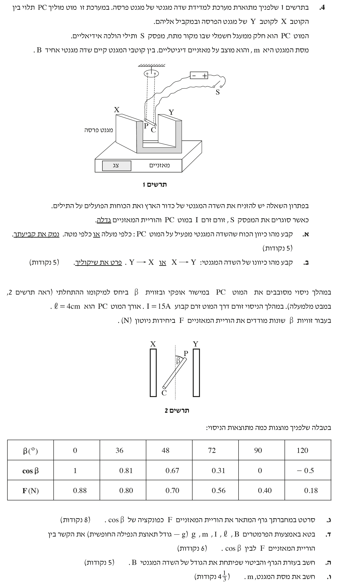

בגרות פיזיקה 2019 - חשמל, שאלה 4
פיזיקה / 5 יח"ל
פתרון מלא ומוסבר צעד-אחר-צעד, כולל ניתוח כוחות ושדות מגנטיים
עודכן:
--- --:--:--

[תמונת השאלה המקורית]
לא נמצאה תמונה בשם question-image.png באותה תיקייה.
מה נתון: כאשר סוגרים את המפסק S, הוריית המאזניים הדיגיטליים שעליהם מונח המגנט גדלה. המאזניים מודדים את הכוח הנורמלי שהם מפעילים על המגנט.
מה מחפשים: את כיוון הכוח המגנטי שמפעיל השדה המגנטי על המוט PC (כלפי מעלה או כלפי מטה) ונימוק לקביעה זו.
נוסחאות ועקרונות בשימוש:
\( \Sigma \vec{F} = 0 \) (החוק הראשון של ניוטון למערכת בשיווי משקל)
החוק ה-3 של ניוטון כוח שגוף א' מפעיל על גוף ב' שווה בגודלו והפוך בכיוונו לכוח שגוף ב' מפעיל על גוף א'.
פתרון צעד-אחר-צעד:
נתון כי כאשר סוגרים את המפסק (וזורם זרם), הוריית המאזניים גדלה. המאזניים מודדים את הכוח הנורמלי \( N \) שהם מפעילים כלפי מעלה כדי לאזן את הכוחות הפועלים על המגנט מטה. לפני סגירת המפסק, המאזניים מדדו רק את משקל המגנט (\( N = Mg \)). מכיוון שההורייה גדלה, המשמעות היא שנוסף כוח שדוחף את המגנט כלפי מטה. כוח זה הוא הכוח המגנטי שהמוט מפעיל על המגנט, נסמנו \( F_{\text{rod}\to\text{mag}} \).
נרשום את משוואת הכוחות על המגנט בציר האנכי (נקבע כיוון חיובי מעלה). הכוחות הפועלים הם: כוח הכובד \( Mg \) (מטה), הכוח הנורמלי \( N \) (מעלה), והכוח המגנטי \( F_{\text{rod}\to\text{mag}} \) שמצאנו זה עתה שכיוונו מטה. מאחר שהמגנט במנוחה, שקול הכוחות הוא אפס:
\[ \Sigma F_y = 0 \implies N - Mg - F_{\text{rod}\to\text{mag}} = 0 \implies N = Mg + F_{\text{rod}\to\text{mag}} \]
ממשוואה זו ניתן לראות בבירור כיצד מתקבל \( N > Mg \).
כעת, לפי החוק השלישי של ניוטון (פעולה ותגובה), הכוח שהמגנט מפעיל על המוט שווה בגודלו והפוך בכיוונו לכוח שהמוט מפעיל על המגנט. מכיוון שהמוט דוחף את המגנט כלפי מטה, השדה המגנטי של המגנט מפעיל כוח על המוט כלפי מעלה.
מסקנה: כיוון הכוח המגנטי שהשדה מפעיל על המוט PC הוא כלפי מעלה.
טיפ מורה:
שימו לב! הניסוח כאן מבלבל הרבה תלמידים. המאזניים תמיד מודדים את הכוח הנורמלי \( N \) שהם צריכים להפעיל כדי להחזיק את הגוף. אם ההוראה גדלה, סימן שנוסף כוח שדוחף את הגוף אל המאזניים. זהו המפתח לפתרון שאלות של מאזניים בשדות מגנטיים.
מה נתון: מצאנו שכיוון הכוח המגנטי על המוט הוא כלפי מעלה. בנוסף, מתרשים 1 אנו רואים את קוטביות המקור (הדק חיובי מימין, הדק שלילי משמאל).
מה מחפשים: את כיוון השדה המגנטי שבין קוטבי המגנט: מ-X ל-Y או מ-Y ל-X, כולל פירוט השיקולים.
נוסחאות ועקרונות בשימוש:
כלל יד ימין (לכוח לורנץ) כיוון הזרם החשמלי הסטנדרטי במעגל הוא מההדק החיובי אל ההדק השלילי.
פתרון צעד-אחר-צעד:
ראשית, נקבע את כיוון הזרם במוט. לפי תרשים 1, ההדק החיובי (+) נמצא בצד ימין ומחובר דרך המפסק אל קצה C של המוט (אשר נמצא קרוב יותר אלינו, בקדמת האיור, כפי שמשתמע גם מתרשים 2). ההדק השלילי (-) מחובר לקצה P. לכן הזרם במוט זורם מנקודה C לנקודה P. במבט-על (תרשים 2), פירוש הדבר הוא שכיוון הזרם הוא "לתוך הדף" (מאיתנו והלאה).
כעת נשתמש בכלל יד ימין:
• כיוון הכוח המגנטי הפועל על המוט (מתוך כף היד) הוא כלפי מעלה (כפי שמצאנו בסעיף א').
• כיוון הזרם \( I \) (אגודל) הוא לתוך הדף (מ-C ל-P).
כדי שכף היד תפנה כלפי מעלה והאגודל יצביע לתוך הדף, ארבע האצבעות חייבות להצביע שמאלה. הצד השמאלי הוא הקוטב X והצד הימני הוא הקוטב Y. לכן, השדה המגנטי מכוון מקוטב Y אל קוטב X.
מסקנה: כיוון השדה המגנטי הוא מ- Y ל- X.
טיפ מורה: קריאת תרשימים תלת-ממדיים היא מיומנות נרכשת. שימו לב לתרשים 2 (מבט מלמעלה) שמבהיר היטב את האוריינטציה. קצה P רחוק יותר מאיתנו וקצה C קרוב. אם תעקבו באצבע אחר חוטי הנחושת מהסוללה, תראו בבירור שהחיובי מגיע ל-C.
מה נתון: המוט מסובב בזווית \( \beta \) ביחס למיקומו ההתחלתי. זרם במוט: \( I = 15 \text{ A} \). אורך המוט לאחר המרה (MKS): \( \ell = 4 \text{ cm} = 0.04 \text{ m} \). קיימת טבלה המציגה את הקשר בין \( \cos\beta \) לבין קריאת המאזניים \( F \) בניוטונים.
מה מחפשים: לסרטט במחברת גרף המתאר את הוריית המאזניים \( F \) כפונקציה של \( \cos\beta \).
בניית הגרף:
אנו נציב את הערכים מהטבלה הנתונה בגרף פיזור ונעביר קו מגמה (Best fit line) שעובר קרוב ככל האפשר לכל הנקודות. הציר האופקי יהיה \( \cos\beta \) והציר האנכי יהיה הכוח \( F \text{ (N)} \).
מסקנה: הגרף (פיזור וקו מגמה ישר) מתואר לעיל בהתאמה לנתוני הטבלה.
טיפ מורה: כללים לשרטוט גרף בבגרות
- גודל: הגרף יהיה בגודל חצי דף לפחות.
- כותרות: הגרף יכיל כותרת ראשית לגרף וכותרות לכל אחד מהצירים.
- יחידות מידה: יש לציין בבירור יחידות מידה לכל ציר בסמוך לכותרת.
- פריסת נתונים: יש לבחור טווחים (Scale) כך שנקודות הנתונים ימלאו את רוב שטחו של הגרף.
- שנתות (Tick marks): יש לשמור על קנה מידה אחיד בכל ציר ולסמן שנתות בצורה עקבית, למשל שנתה אחת כל שתי משבצות.
מה נתון: תאוצת הנפילה החופשית המוכרת \( g = 10 \text{ m/s}^2 \), והפרמטרים \( m, I, \ell, B \).
מה מחפשים: לבטא את הקשר המתמטי בין קריאת המאזניים \( F \) לבין \( \cos\beta \), באמצעות הפרמטרים שניתנו.
נוסחאות ועקרונות בשימוש:
\( F_B = I \ell B \sin\alpha \) (גודל כוח הפועל על תיל נושא זרם בשדה מגנטי)
\( \Sigma \vec{F} = 0 \) (החוק הראשון של ניוטון למערכת בשיווי משקל)
פיתוח המשוואה:
ראשית, עלינו לדייק בהגדרת הזוויות: בנוסחת הכוח המגנטי, הזווית \( \alpha \) מוגדרת תמיד כזווית שבין כיוון זרימת הזרם לבין קווי השדה המגנטי. לעומת זאת, הזווית \( \beta \) הנתונה בשאלה אינה הזווית הזו! המוט סובב ממיקום התחלתי שבו היה מאונך לשדה. לכן, \( \beta \) היא בעצם הזווית שבין האנך לשדה לבין כיוון זרימת הזרם (ולא בין כיוון השדה לזרם). מכאן נובע שהזווית בין זרימת הזרם לבין השדה המגנטי עצמו היא הזווית המשלימה: \( \alpha = 90^\circ - \beta \). נשתמש בזהות הטריגונומטרית \( \sin(90^\circ - \beta) = \cos\beta \), ונציב זאת בנוסחת הכוח המגנטי הפועל על המוט:
\[ F_{\text{mag\_on\_rod}} = I \ell B \sin(90^\circ - \beta) = I \ell B \cos\beta \]
הכוח המגנטי שפועל על המוט הוא כלפי מעלה. על פי החוק השלישי של ניוטון, המוט מפעיל כוח שווה כלפי מטה על המגנט. משוואת הכוחות על המגנט בציר האנכי (כיוון חיובי מעלה) היא:
\[ N - mg - F_{\text{mag\_on\_rod}} = 0 \]
קריאת המאזניים \( F \) שווה לכוח הנורמלי \( N \) שהם מפעילים. נבודד את \( N \) ונציב את הכוח המגנטי שמצאנו:
\[ F = N = I \ell B \cos\beta + mg \]
מסקנה: הקשר הוא \( F = (I \ell B) \cdot \cos\beta + mg \)
טיפ מורה:
שימו לב למבנה של הביטוי שהתקבל. זהו ביטוי של פונקציה קווית (לינארית) מהצורה \( y = ax + b \). במקרה שלנו ציר ה-y הוא המשתנה \( F \), ציר ה-x הוא המשתנה \( \cos\beta \). מכאן נובע שהשיפוע של הגרף מסעיף ג' הוא \( a = I \ell B \) ונקודת החיתוך עם הציר האנכי היא \( b = mg \). אלו תובנות חשובות מאוד לסעיפים הבאים!
מה נתון: הגרף הקווי, הנתונים המספריים \( I = 15 \text{ A} \), והאורך שהמרנו \( \ell = 0.04 \text{ m} \).
מה מחפשים: לחשב בעזרת הגרף והביטוי שפיתחנו את גודל השדה המגנטי \( B \).
חישוב:
נבחר שתי נקודות נוחות מקו המגמה שסרטטנו בגרף כדי לחשב את השיפוע. נבחר את נקודות הקצה: \( (x_1, y_1) = (0, 0.40) \) ו- \( (x_2, y_2) = (1.0, 0.88) \). נחשב את השיפוע \( S \) (על פי ההגדרה המתמטית \( S = \frac{\Delta y}{\Delta x} \)):
\[ S = \frac{\Delta F}{\Delta (\cos\beta)} = \frac{0.88 - 0.40}{1.0 - 0} = \frac{0.48}{1} = 0.48 \text{ N} \]
על פי המשוואה הלינארית שפיתחנו בסעיף ד', שיפוע הפונקציה שווה למקדם של המשתנה \( \cos\beta \). כלומר, \( \text{Slope} = I \cdot \ell \cdot B \). נשווה את הביטוי לשיפוע שחישבנו ונחלץ את \( B \):
\[ I \ell B = 0.48 \]
\[ 15 \cdot 0.04 \cdot B = 0.48 \]
\[ 0.6 \cdot B = 0.48 \]
\[ B = \frac{0.48}{0.6} = 0.8 \text{ T} \]
מסקנה: גודל השדה המגנטי הוא \( B = 0.8 \text{ T} \) (טסלה).
טיפ מורה:
זכרו שעליכם לבחור נקודות מתוך קו המגמה (הקו הישר שהעברתם) ולא סתם נקודות מהטבלה, אלא אם כן הנקודות שבטבלה נופלות בדיוק על קו המגמה.
מה נתון: תאוצת הכובד \( g = 10 \text{ m/s}^2 \), המשוואה שפיתחנו בסעיף ד', ונקודת החיתוך עם ציר ה-Y.
מה מחפשים: את מסת המגנט \( m \).
חישוב:
נחזור למשוואה שפיתחנו בסעיף ד': \( F = I \ell B \cos\beta + mg \). נקודת החיתוך עם ציר ה-Y מתקבלת כאשר המשתנה בציר ה-X שווה לאפס, כלומר כאשר \( \cos\beta = 0 \). אם נציב זאת במשוואה נקבל כי במצב זה: \( F = mg \).
מתוך הגרף שבנינו או מתוך הטבלה, אנו רואים שכאשר \( \cos\beta = 0 \), ערך הכוח הנמדד הוא \( F = 0.40 \text{ N} \). נשווה ערך זה לביטוי של נקודת החיתוך ונחלץ את המסה \( m \):
\[ mg = 0.40 \]
\[ m \cdot 10 = 0.40 \]
\[ m = \frac{0.40}{10} = 0.04 \text{ kg} \]
נהוג ולעיתים נוח יותר להציג מסה של גופים קטנים בגרמים. נמיר יחידות:
\[ 0.04 \text{ kg} = 0.04 \cdot 1000 \text{ g} = 40 \text{ g} \]
מסקנה: מסת המגנט היא \( 0.04 \text{ kg} \) (או \( 40 \text{ g} \)).
טיפ מורה:
זוהי המחשה מצוינת לכך שניתוח נכון של משוואת הגרף פותר לנו את הסעיפים האחרונים בקלות. תמיד חפשו מה מסמל השיפוע ומה מסמלת נקודת החיתוך בהקשר הפיזיקלי של השאלה!